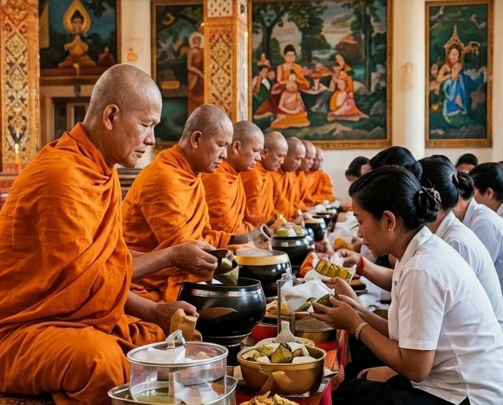

History of Pchum Ben Day
Pchum Ben Day (also known as Ancestors' Day) is a traditional Buddhist festival in Cambodia. It has been practiced for many centuries and is an important part of Khmer culture.
According to Buddhist belief, during this period, the gates of the spirit world are opened, and the souls of the deceased can visit the living. People make offerings to the monks and pray for the progress of their ancestors' souls.

People make offerings to the monks at the pagoda.